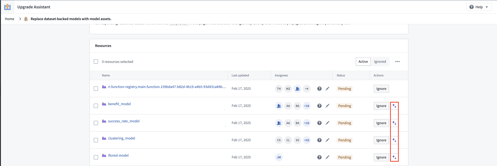

:::callout{theme="warning" title="Planned deprecation"}
The foundry_ml library and dataset-backed models have been fully deprecated since October 31, 2025, and are unavailable for use. Any remaining workflows should be migrated to use the palantir_models library, either by training a new model or by wrapping the existing model in a model adapter. Additionally, models built with foundry_ml in Code Workbooks need to be rebuilt in Jupyter® Code Workspaces or Code Repositories. For guidance on building a new model with palantir_models, review how to train a model in Code Repositories or how to train a model in Jupyter® notebooks. Contact Palantir Support if you require additional help migrating your workflows.
:::
:::callout{theme="warning"}
From version 0.1599.0 onwards, the palantir_models library offers support for Spark ML models, but we recommend users write such models to Scikit-learn or a similar single-node framework as part of this migration where possible for a better experience with Live Inference. Separately, we recommend replacing MetricSets with experiments where possible. Note that experiments now support image metrics, but do not yet support chart metrics.
:::
A first campaign, out of two campaigns, was published in Upgrade Assistant to help users migrate away from dataset-backed models. Only models that are in use are flagged for review, while others are marked as Ignored and filtered out from the campaign view by default.
Users are able to designate a model asset replacement for a dataset-backed model directly from the dataset-backed model page. This information is used by Upgrade Assistant to determine the migration status of the resource. Models with an identified replacement have a status of Completed and are filtered out from the campaign view by default. More generally, using this feature is recommended to direct consumers of the model to its replacement in the new framework.
To learn more:
In environments where AIP is enabled, code migration suggestions powered by a Large Language Model (LLM) through AIP are available. These suggestions can be viewed by selecting the purple icon, as depicted below. The generated code can then be copied using the clipboard icon above each file.

:::callout{theme="warning"} While the LLM is able to help users to get started with migration, you will likely need to modify the code you are provided by the LLM in order to pass checks and produce a working model. Make sure to thoroughly review the code and the model outputs. :::
A second campaign has been published to surface resources which consume deprecated dataset-backed models. These resources include: